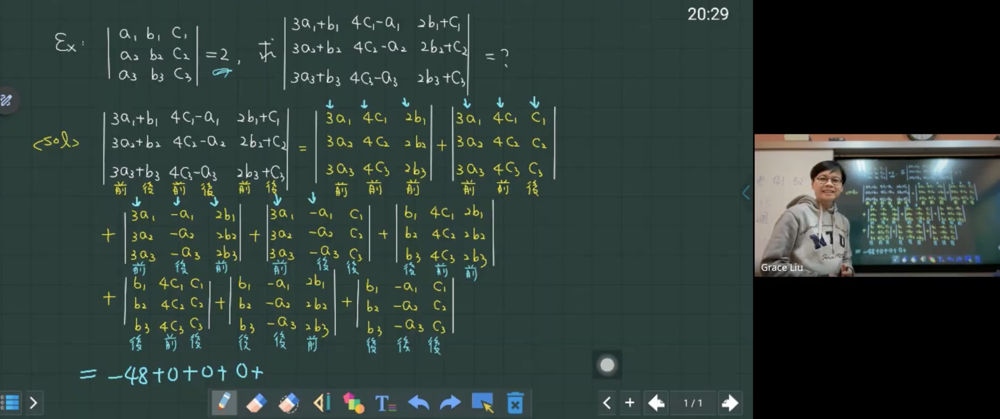

Numa 數之本｜線上專業數學教室
💡教學堅持
【六年一貫】
學習的路上，最珍貴的是「教學的連續性」與「對學生程度的精準掌握」。
每位學生從國一到高三、從會考到學測，皆由 Numa
老師親自授課與帶領，精準捕捉每個學生的邏輯盲點。
【單一導師】【拒絕教學斷層】
在這裡你不需要經常適應新老師，從基礎紮根到大考衝刺，Numa 老師全程陪伴，完整規劃學生的數學成長曲線。
【十年堅持--不貼紅榜】
Numa
數之本--不把學生成績作為宣傳工具，如此容易造成將精華資源傾斜給「高分學生」，Numa
老師在意的是每一位學生的進步曲線。
每一位願意努力的學生，都值得 Numa 老師全心全意的帶領。
【高效線上互動】
打破地區限制，全台學生皆可同步接受最專業、最即時的邏輯引導。
🎯 嚴選學生：
Numa 老師不在意你現在的分數，但在意你的學習態度。
僅招收具備以下特質的學生：
- 態度積極： 願意主動思考，對探究知識保有熱忱。
- 配合度高： 認同老師的教學邏輯，落實課程要求的訓練計畫。
- 企圖心強： 擁有「我要變得更強」的決心，將進步視為必然。
關於老師
Grace Liu (NUMA 本人)
教學風格
- 思維引導與邏輯重塑：
擅長解析學生的思考路徑。透過研究每位學生獨特的邏輯習慣，Numa 老師會順著你的思路進行引導與修正，將原本混亂的想法轉化為嚴謹的運算邏輯，讓學生真正實現「想通了，就記住了」。
- 因材施教的深度佈局：
課程內容由淺入深、環環相扣。根據學生的當下理解能力與學習節奏，動態調整授課深度與題型難度。確保基礎薄弱者能站穩根基，學有餘力者能挑戰思維極限。
- 嚴謹治學的學習要求：
身為導師，我對教學品質有著近乎苛求的嚴格堅持。同樣地，我也要求進入 Numa 的學生必須具備高度的自律與認真。
我們不走輕鬆的捷徑，因為唯有紮實的訓練，才能支撐起強大的進步企圖心。
學歷
- 國立臺灣大學電子工程學系博士肄業
- 國立臺灣大學電子工程學系碩士
- 國立成功大學電機工程學系學士
經歷
- NUMA數之本創辦人
- 科技公司創辦人
- 勞動部新尖兵計劃電子電機、資訊科技類講師
- 經濟部科技研究發展專案計劃主持人
- 中華民國傑出企業管理人協會電腦科技專業委員
- 教育部大學智財平台智慧機械 & AI 團隊資深主管
- 國立臺灣大學軟體工程助教
- 台灣電視公司戲劇類副導演
- 中華民國國際跆拳道推廣協會理監事
- 跆拳道教練
論文著作
- S. J. Chen, G. Liu, H. P. Yang, C. H. Luo, and W. M. Hwu, "Design of a Power-Efficient ARM Processor with a Timing-Error Detection and Correction Mechanism", IEEE International System-on-Chip Conference(SOCC), Seattle, USA, Sep. 2016
- S. J. Chen, H. P. Yang, D. J. Lin, and G. Liu, "Modeling and Simulation of Quantum-Well Infrared Photodetectors", IEEE International System-on-Chip Conference(SOCC), Seattle, USA, Sep. 2016
- C. J. Wei, S. M. Liu, S. J. Chen, and Y. H. Hu, “Optimal Fixed-Point Fast Fourier Transform”, IEEE Workshop on Signal Processing Systems(SiPS), Taipei, Taiwan, ROC, Oct. 2013
- Shu-Min Liu “Ordered Input-Output and Memory-Aware FFT Architecture Design” Aug. 2009
- 勇闖創業路 - 做你所愛，愛你所做（國立中山大學）
專利
- Shu-Min Liu "Multiple-clock controlled logic signal generating circuit”, US Patent: No. US7,272,069B2, Sep. 2007
- Shu-Min Liu "Memory connection structure of storage device”, US Patent: No. US9,251,861B2, Sep. 2007
- 劉淑敏, “多頻時脈控制式邏輯信號產生裝置”, 中華民國專利: No. I296359, May. 2008
- 劉淑敏, “以挥发性存储器实现的固态存储装置”, 大陸專利: No. ZL2011 2 0205130.0, Jun. 2011
- 劉淑敏, “以揮發性記憶體實現的固態儲存裝置”, 中華民國專利: No. M415338, Nov. 2011
- 劉淑敏, “数据读写效能加速装置及具有该装置的硬盘设备”, 大陸專利: No. ZL2012 2 0001551.6, Jan. 2012
- 劉淑敏, “資料讀寫效能加速裝置，及具有該裝置的硬碟設備”, 中華民國專利: No. M428427, May. 2012
- 劉淑敏, “存储装置”, 大陸專利: No. ZL2013 2 0194584.1, Apr. 2013
- 劉淑敏, “儲存裝置的記憶體連接架構”, 中華民國專利: No. M458595, Aug. 2013
- 劉淑敏, “复合式硬盘的访问方法”, 大陸專利: No. ZL201610061995.1, Jan. 2016
- 劉淑敏, “复合式硬盘的交握方法”, 大陸專利: No. ZL201610063849.2, Jan. 2016
- 劉淑敏, “基于动态内存控制芯片的边缘计算工业控制系统”, 大陸專利: No. ZL201721444401.1, Nov. 2017
- 劉淑敏, 洪泗紋, “複合式硬碟的交握方法”,中華民國專利: No. I601017, Oct. 2017
- Shu-Min Liu, Ssu-Wen,Hung, "Handshaking method of hybrid hard-disk drive”,US Patent: No. US10,002,106B2, Jun. 2018
- Shu-Min Liu, Ssu-Wen,Hung, "Accessing method for accessing hybrid hard-disk drive”, US Patent: No. US 10,019,404 B2, Jul. 2018
榮譽
- 金峰獎：十大傑出企業創新研發獎
- 金炬獎：年度十大雲端儲存企業獎
- 台灣國際發明得獎協會：國際傑出發明家博學博士
- IEEE Associate Software Developer Certification
- 跆拳道四段